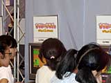

| #7 ゲームボーイアドバンス ライセンシータイトル体験コーナーレポート その１ |
| ● 奇々怪界あどばんす アルトロン |
|
ゲームセンターで人気を博した懐かしのシューティングゲーム『奇々怪界』が、ゲームボーイアドバンスで蘇りました。といっても、大幅にアレンジされ、完全新作のシューティングアクションとしての登場です。和風の画面がとってもユニーク。ちょっと変わったキャラクターを操作し、お化けがウヨウヨいるステージを戦いながら進んでいきます。タヌキのしっぽをグルグル回して敵を倒すなど、プレイしながら思わず笑ってしまうインタラクションがいっぱいです。ステージも神社、お寺など完全に日本風。アイテムでお札が落ちていたり、ほのぼのした演出がなんとも魅力的ですね。 体験コーナーでは大人のお客さんもしっかりプレイされていました。アーケード版のファンだったかたかな？ シンプルなゲームだけれどハマってしまう楽しさに、プレイ時間いっぱいまで遊んでいくお客さんが目立ちました。 |
| ● ブレンダーブロス アンフォグラムハドソン |
|
主人公の「ブレンダー」を操作して、さまざまなアクションを繰り広げながら、トラップをクリアしていくアクションゲーム。長〜い耳を利用していろんなアクションをするので、「イヤーアクションゲーム」と名づけられています。これぞ新ジャンル!? ウサギのような耳を持つブレンダーはとってもキュートです。耳を使ってフワフワと空を飛んだり、耳で攻撃して敵と戦ったり。操作も簡単なので、女性やお子様にも楽しめそう。 体験コーナーでは小さい子どもたちが一生懸命プレイしていました。キャラクターが可愛く親しみやすいので、みんな画面に釘づけみたいですよ。フワフワと上手に耳を操作して、ステージを進んでいました。フィールドのグラフィックもきれいでいいですね。 |
| ● ハローキティコレクション ミラクルファッションメーカー イマジニア |
|
女の子に大人気のキャラクター、キティちゃんのコスチュームコーディネートアドベンチャー。モデルにチャレンジすることになったキティちゃん。世界中の町をすごろくで回り、モデル用のコスチュームの材料を集めていきます。マップを回ると、いろいろなイベントが発生。うまくクリアして先へ進みましょう。材料の組み合わせ次第で、なんと１００万通りのコスチュームが楽しめるゲームです。服のシルエットや柄を自分で選ぶことができ、スタイリストになった気分が味わえます。 体験コーナー前には、もちろん女の子たちの列。お母さんの手を引っ張って、急いでブースにやって来る子たちもいます。パステルカラーの画面が可愛いですね。イベントのコマで発生するミニゲームやクイズには、親子でチャレンジしていたようですよ。キティちゃんみたいにおしゃれな女の子になれるかな？ |
| ● メダロット・ナビ（カブト）、メダロット・ナビ（クワガタ） イマジニア |
|
ゲームボーイ用ソフトの人気タイトル『メダロット』が、いよいよゲームボーイアドバンスに登場です。新しい主人公とメダロットが、魅力的なストーリーを展開。シュミレーションゲームの要素が加わって、戦略性も高くなりました。仲間と協力して、メダロットを効率よく配置していきます。カブト、クワガタの２バージョンでの発売です。 体験ブースは男の子にバツグンの人気。お友達どうしで並んでいるかたが多いみたいですね。小学６年生の平沢信吾くんは、埼玉県在住。今日は６時過ぎに起きてスペースワールドにやって来ました。『メダロット・ナビ』はぜひ買ってみたいとのこと。また、『メダロット』シリーズの大ファンだという飯田陵くんも、「すごくリアルになっていて、前の『メダロット』より面白いです。 カブト、クワガタの両方を買うつもりです」と体験プレイの感想を語ってくれました。 |
| ● AdvanceRALLY エムティーオー |
|
お父さんと男の子がいっしょに楽しんでいたのが『ＡｄｖａｎｃｅＲＡＬＬＹ』。迫力満点のラリーゲームです。コースは14ヶ国３セクションを設定、車も現役のラリーカーから名車と呼ばれる車種まで23種類を選べます。アップダウンの激しいコースは、ラリーゲームならでは。ジャンプなどのワザも楽しめます。 体験ブースではエム・ティー・オーの古島さんにお話をおうかがいしました。「売りはズバリ、アドバンスでは初のラリーゲームということ。起伏の多いコースが魅力です。操作は簡単なので、親子でプレイしていかれるかたも多いですね。子どもがアドバンスを持って操作しているところを、お父さんがかぶさるようにして手を出している（笑）姿もよく見ます」。お父さん、子どもさんにも遊ばせてあげてくださいね。 |
| ● ひつじのキモチ。 カプコン |
|
 プレイヤーは牧羊犬になり、柵をこえてあちこちに散らばってしまった羊たちを集めます。気まぐれな羊たちは、野原で遊んだり、集団でサーッと移動してしまったり。制限時間内に所定の数を、所定の場所へ誘導できればＯＫ。実にほのぼのとした牧歌的なゲームなのです。 アドバンスにはめずらしく上から見下ろして操作するゲーム性は、とても新鮮です。羊がワラワラ動いている様子がユニーク。体験コーナーでは、みなさん夢中になってプレイしていました。カップルでじーっと画面を見つめ、熱中してプレイしているかたがたもいましたよ。やさしい色使いのグラフィックは、女性ユーザーにもウケそうです。このほのぼの感がクセになりそうなゲームですね。 |
| 前のレポートへ | 次のレポートへ |
|
|